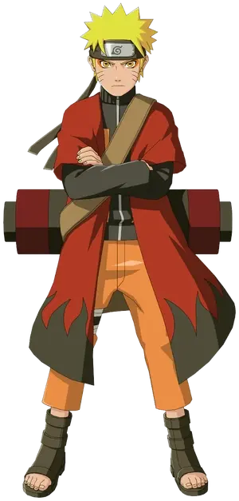
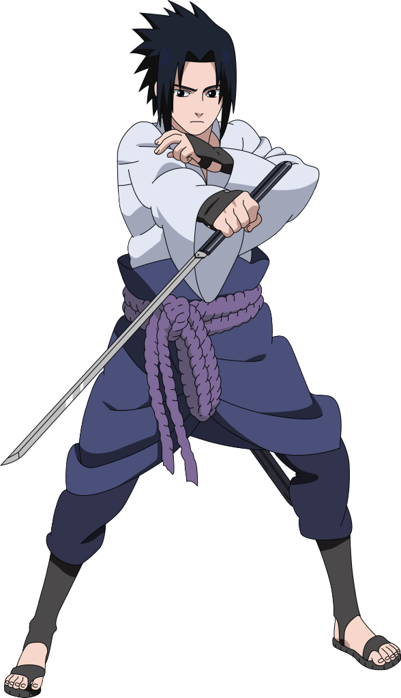
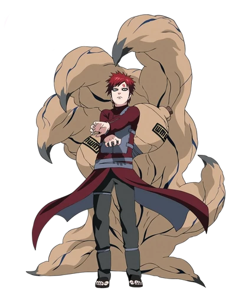
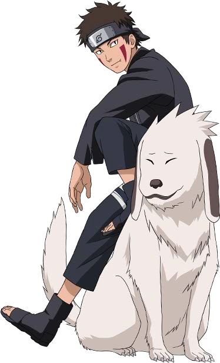
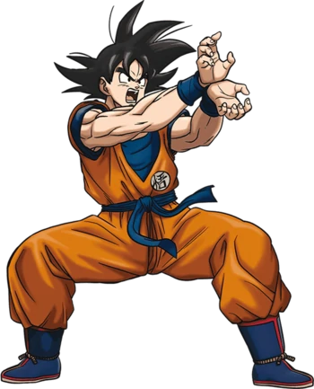
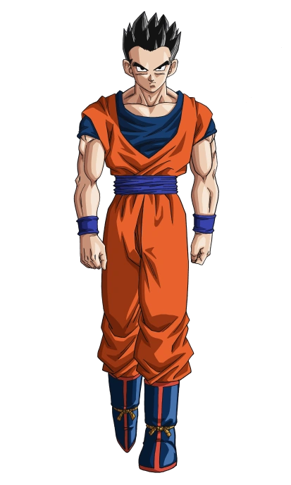
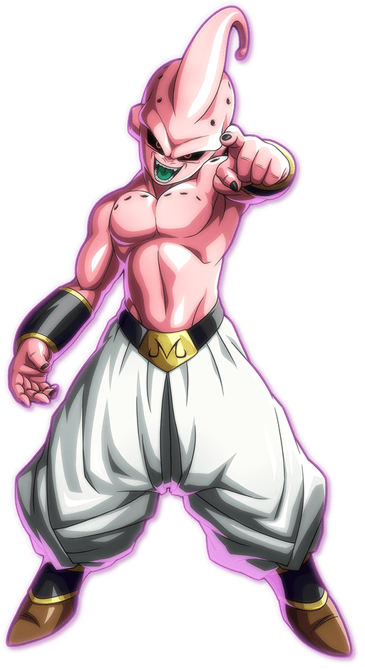
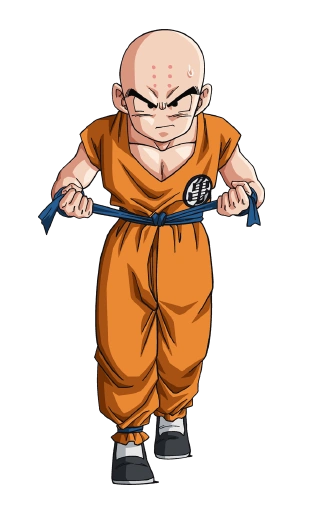

-

Poderes e Habilidades: Naruto
Super força, velocidade, agilidade, resistência, pode criar clones da sombra que podem usar seus jutsus, manipulação elemental do vento, regeneração,habilidade de invocar sapos para o ajudarem nos combates, usuário de energia natural que aumenta significantemente seus atributos, experiente no taijutsu, ...
-

Poderes e Habilidades: Sasuke
Super força, velocidade,agilidade, resistência,espadachim experiente, mestre do ninjutsu, ilusionista,habilidoso no taijutsu,resistência a venenos,manipulação do fogo e do trovão,habilidade de vôo (Com Susano´o), controle de mente, expert em Genjutsu e manuseio de kunais, pode se clonar,pode ...
-

Poderes e Habilidades: Gaara
Gaara usando sua habilidade de manipular a areia, afrouxa o chão abaixo do inimigo e pega-o em um redemoinho de areia. O inimigo engolido afunda até duzentos metros de profundidade, enquanto completamente incapaz de mover um músculo.
-

Poderes e Habilidades: Kiba
A maioria das técnicas de Kiba estão jutsu colaboração junto com seu companheiro Akamaru, mas ele também é capaz de fazer uma sincronização perfeita com seus companheiros de equipa como visto durante sua luta contra o Tobi quando ele funciona perfeitamente com o Naruto.
-

Poderes e Habilidades: Goku
Habilidade mais famosa do Goku, consiste em concentrar Ki em um ponto e lança-lo em forma de rajada. Pode ser atirado pelos pés, e sua trajetória pode ser controlada.
-

Poderes e Habilidades:Gohan
Gohan ainda possui força e velocidade sobrehumanas, bem como reflexos aguçados (como visto em seu treino com Goten). Enquanto tinha a sua cauda, Gohan se transformava em um Oozaru caso olhasse para a lua cheia.
-

Poderes e Habilidades: Majun Boo
Manipulação da própria estrutura corporal: Boo pode alterar o seu próprio corpo, para poder esticar membros, criar mini-clones dele, entre outras coisas. Mostrou poder controlar as partes de seu corpo individualmente também!
-

Poderes e Habilidades: Kuririn
Kuririn amplifica a técnica e desenvolve um Taiyoken aumentado 100 vezes, capaz de cegar o oponente mesmo que ele esteja de olhos fechados e impedí-lo de detectar Ki.